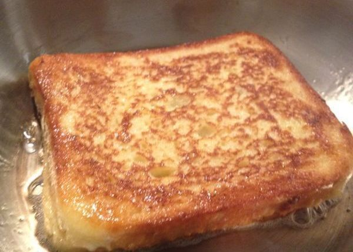

French Toast

A quick and easy snack for kids when the cupboard is bare. This is not a dessert!
Toast is bread that has been browned by radiant heat. The browning is the result of a Maillard reaction, altering the flavor of the bread and making it firmer so that it is easier to spread toppings on it.
Ingredients
- 1 egg
- 2 tsp milk
- 2 slices bread
Steps
- Heat a small amount of margarine or butter in a frypan.
- Beat the egg and milk together in a shallow bowl.
- Dip a bread slice in the mixture, thoroughly coating both sides.
- Allow excess mixture to drain and place bread slice in frying pan.
- Fry for a few minutes on each side, adding extra butter and margarine if required.
- Repeat with remaining bread.